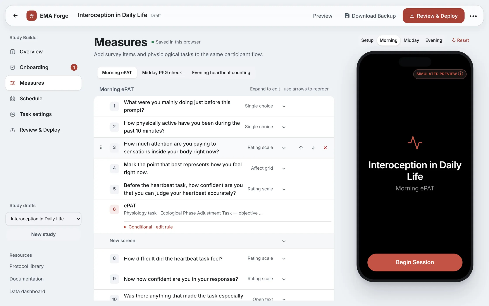
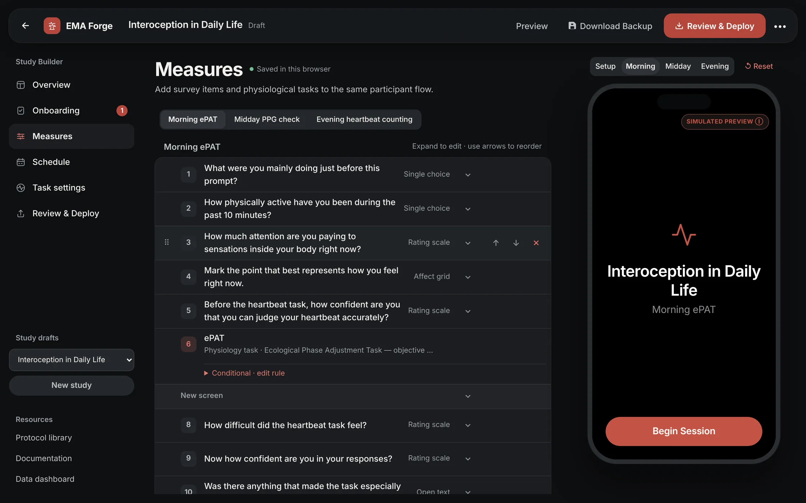

Build and run your own EMA study.
Build surveys with branching, add optional phone-camera heart measures, and deploy to your own Cloudflare account. Responses go straight to your storage and never pass through EMA Forge.
Run your first study

Surveys that adapt
Rating scales, choices, body maps and free text, with follow-ups that appear only when an earlier answer calls for them.
Physiology from the phone camera
Heart rate from a fingertip on the camera (PPG), plus two heartbeat-perception tasks: the ePAT and heartbeat counting.Both perception tasks are in beta; check the devices your participants use.
Your infrastructure
Each study runs on your Cloudflare account. Small studies can fit the free tier; text-message reminders through Twilio are optional and billed by Twilio.Hosting alone doesn’t make a study IRB-approved or suitable for protected health information.
From idea to field study
Start blank or from a protocol, preview what participants see, deploy to Cloudflare, then invite participants by link or text message and watch responses arrive.
Cite EMA Forge
Cite the release you used. Citation metadata is in the repository’s CITATION.cff.
Whitacre, K. (2026). EMA Forge (Version 2.0.0) [Computer software]. https://github.com/keeganwhitacre/emaforge